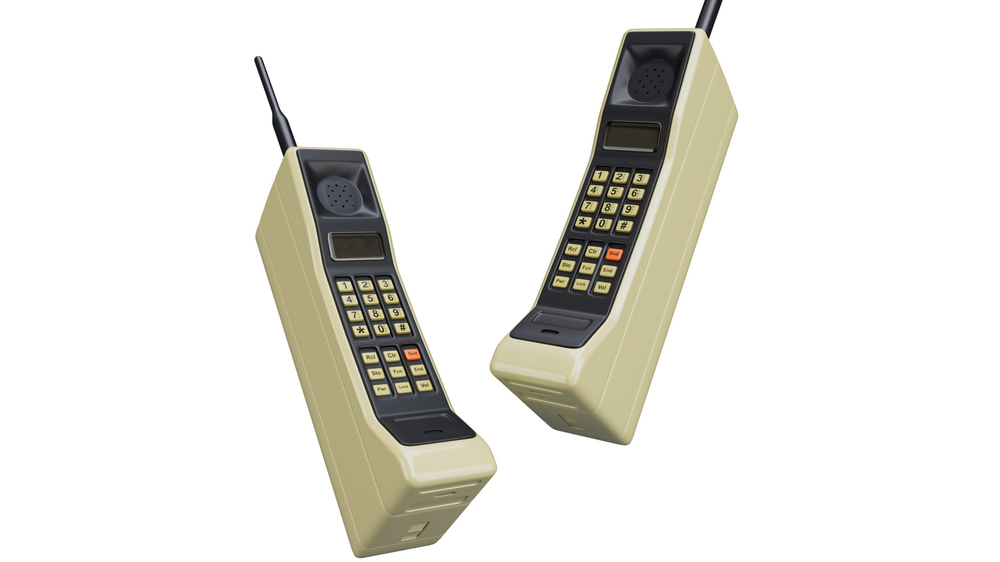

1. Historia y Evolución de los Celulares
La historia de los celulares comenzó en la década de 1940 cuando se desarrollaron los primeros sistemas de comunicación móvil por radio que se usaban principalmente en vehículos eran grandes poco eficientes y muy costosos en 1973 Martin Cooper ingeniero de Motorola realizó la primera llamada desde un teléfono móvil portátil un enorme prototipo que pesaba más de un kilo y este avance llevó a la creación del primer celular comercial en 1983 el Motorola DynaTAC 8000X marcando el inicio de la primera generación 1G basada en redes analógicas que permitían únicamente hacer llamadas de voz con calidad limitada en los años 90 se introdujo la segunda generación 2G con redes digitales GSM que ofrecieron mejor calidad de audio mayor capacidad para usuarios y funciones nuevas como los mensajes de texto SMS y los primeros juegos en celulares como el famoso Snake de Nokia además los teléfonos se volvieron más pequeños livianos y accesibles durante los 2000 llegó la tercera generación 3G con internet móvil correo electrónico videollamadas y descargas más rápidas los teléfonos comenzaron a incluir pantallas a color cámaras integradas reproductores de música y almacenamiento expandible destacando marcas como Nokia Sony Ericsson BlackBerry y Motorola en 2007 Apple revolucionó el mercado con el primer iPhone al introducir pantalla táctil capacitiva interfaz de usuario avanzada y más adelante la App Store que permitió instalar miles de aplicaciones personalizadas poco después Google lanzó Android un sistema operativo libre que fue adoptado por fabricantes como Samsung HTC y LG generando una explosión en el desarrollo de smartphones en la década de 2010 los celulares evolucionaron gracias a las redes 4G que ofrecieron velocidades de conexión mucho más rápidas permitiendo el uso masivo de redes sociales videollamadas en HD y plataformas de streaming los smartphones comenzaron a tener múltiples cámaras sensores de huellas da ctilares reconocimiento facial pantallas más grandes y sin botones físicos además se convirtieron en herramientas de trabajo navegación entretenimiento y comunicación todo en uno en los años 2020 con la llegada del 5G los celulares alcanzaron velocidades de conexión aún más rápidas con baja latencia permitiendo la expansión del internet de las cosas el gaming en la nube y nuevas formas de conectividad aparecieron los teléfonos plegables los avances en inteligencia artificial asistentes personales más precisos cámaras de nivel profesional y funciones como realidad aumentada traducción simultánea y monitoreo de salud en tiempo real actualmente los celulares siguen evolucionando hacia dispositivos más inteligentes sostenibles y potentes con tecnologías como pantallas flexibles sensores avanzados conexión satelital y procesadores con capacidades de aprendizaje automático que permiten personalizar la experiencia del usuario cada vez más se integran a otros dispositivos como relojes gafas audífonos y autos generando un ecosistema digital completamente conectado y se espera que en el futuro los celulares sean incluso reemplazados por tecnologías portables o integradas al cuerpo humano como lentes inteligentes interfaces neuronales o dispositivos que combinan realidad aumentada y virtual en tiempo real.

2. Componentes Principales de un Celular
Los teléfonos modernos están formados por múltiples componentes que trabajan en conjunto para ofrecer una experiencia de usuario fluida y potente. Entre los más importantes están:
- Pantalla: la mayoría utiliza tecnología OLED o AMOLED por su calidad de imagen superior, colores vibrantes y eficiencia energética. Las pantallas táctiles capacitivas son ahora el estándar, permitiendo una interacción intuitiva.
- Batería: permite la autonomía del dispositivo, generalmente de litio (Li-ion o Li-Po) por su alta densidad energética y bajo efecto memoria. La duración de la batería sigue siendo un factor clave para los usuarios.
- Procesador (SoC): el "cerebro" del celular, como los Qualcomm Snapdragon, Apple A-series o MediaTek Dimensity. Estos Systems-on-a-Chip integran la CPU, GPU y otros elementos para manejar todas las operaciones del dispositivo, desde ejecutar aplicaciones hasta procesar gráficos complejos.
- Cámara: los smartphones actuales incorporan múltiples lentes para distintas funciones, como el modo retrato, fotografía macro, gran angular y teleobjetivo, mejorando significativamente la versatilidad fotográfica. La inteligencia artificial también juega un papel crucial en el procesamiento de imagen.
- Memoria: se divide en RAM (Random Access Memory) para ejecutar aplicaciones en segundo plano de manera eficiente y almacenamiento interno (ROM) para guardar el sistema operativo, aplicaciones, fotos, videos y otros datos del usuario. Las capacidades de almacenamiento han crecido exponencialmente.
Además, incluyen otros elementos como módems para conectividad, sensores (acelerómetro, giroscopio, magnetómetro), altavoces, micrófonos y puertos de carga, todos diseñados para maximizar la funcionalidad en un espacio compacto.
3. Sistemas Operativos Más Populares
Existen dos grandes sistemas operativos dominando el mercado de smartphones a nivel global: Android y iOS. Cada uno ha cultivado su propio ecosistema de usuarios y desarrolladores, ofreciendo experiencias distintivas.
Android, desarrollado por Google, es un sistema de código abierto y ampliamente utilizado por una vasta gama de fabricantes como Samsung, Xiaomi, Huawei, Motorola y OnePlus. Su flexibilidad permite una gran personalización y diversidad de dispositivos en diferentes rangos de precio.
iOS, en cambio, es el sistema operativo móvil de Apple y es exclusivo de sus dispositivos iPhone. Se caracteriza por su interfaz de usuario intuitiva, su robusta seguridad y una integración fluida con otros productos y servicios de Apple. Aunque menos personalizable, su coherencia y rendimiento son altamente valorados.
Ambos sistemas continúan evolucionando con actualizaciones anuales que introducen nuevas características, mejoras de seguridad y optimizaciones de rendimiento. La elección entre Android y iOS a menudo se reduce a las preferencias personales del usuario en cuanto a diseño, funcionalidades y el ecosistema al que desean pertenecer.

4. Conectividad y Redes
La evolución de la conectividad es fundamental para la funcionalidad de los celulares. Hemos pasado por múltiples generaciones de redes móviles, cada una ofreciendo mayores velocidades y nuevas capacidades.
Desde el 2G, que solo permitía llamadas de voz y mensajes de texto con baja velocidad de datos, hasta el 3G que habilitó la navegación web básica y el 4G LTE que popularizó el streaming de video y las aplicaciones en línea.
Actualmente, el 5G es la última generación de conectividad móvil, ofreciendo velocidades increíblemente rápidas (hasta 10 Gbps), una latencia extremadamente baja y una mayor capacidad de conexión. Esto no solo mejora drásticamente la experiencia del usuario en actividades como streaming en 4K, juegos en línea y videollamadas sin interrupciones, sino que también permite el desarrollo de tecnologías emergentes como vehículos autónomos, ciudades inteligentes y la expansión del Internet de las Cosas (IoT).
Además de las redes celulares, los teléfonos también cuentan con Wi-Fi para conexiones locales de alta velocidad, Bluetooth para emparejar accesorios como auriculares o smartwatches, y GPS para servicios de geolocalización. Todas estas tecnologías se combinan para mantenernos constantemente conectados y ubicados.
5. Tendencias y Futuro de los Celulares
El futuro de los celulares parece apuntar hacia una mayor integración de tecnologías avanzadas y una evolución constante en diseño y funcionalidad. Se espera que la inteligencia artificial (IA) integrada se vuelva aún más sofisticada, permitiendo interacciones más naturales y personalizadas con el dispositivo, desde asistentes de voz más inteligentes hasta mejoras en la fotografía computacional.
Las pantallas plegables, que ya han comenzado a aparecer, prometen revolucionar la forma en que interactuamos con nuestros dispositivos, ofreciendo superficies de visualización más grandes en formatos compactos. Las cámaras bajo pantalla y la carga ultra-rápida también son áreas de intenso desarrollo.
Más allá de las innovaciones de hardware, los celulares se están convirtiendo en centros de control personal para el hogar inteligente, la salud (monitoreando signos vitales y actividad física), el trabajo (con capacidades de productividad mejoradas) y el entretenimiento inmersivo (con realidad aumentada y virtual).
También veremos avances significativos en sostenibilidad, con marcas desarrollando teléfonos más duraderos, modulares (que permitan la reparación y actualización de componentes) y fabricados con materiales reciclables o de origen ético, reduciendo así su impacto ambiental. La innovación en el sector de los smartphones sigue siendo incesante.